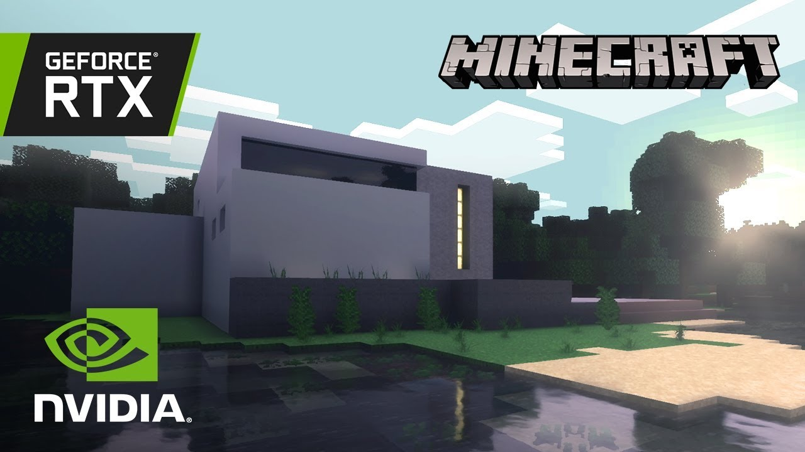

Minecraft is about to get a major graphics revamp, thanks to real-time ray-tracing support for any player using an Nvidia RTX card. Microsoft and Nvidia made the joint announcement at the industry trade show, Gamescom in early on Monday morning. Ray-tracing support will arrive as a free update for all PC Minecraft users.
“Ray tracing sits at the center of what we think is next for Minecraft,” Saxs Persson, head creative director for Minecraft at Microsoft, said in a statement. “GeForce RTX gives the Minecraft world a brand-new feel to it. In normal Minecraft, a block of gold just appears yellow, but with ray tracing turned on, you really get to see the specular highlight, you get to see the reflection, you can even see a mob reflected in it.”
Ray tracing generally improves the realism of a virtual scene by rendering in finer detail the different ways light operates in a scene and interacts with other objects, resulting in more realistic shadows and reflections.
In this case, Microsoft and Nvidia say they’re performing a specific ray-tracing technique known as path tracing. “Path tracing simulates the way light is transported throughout a scene. It presents a unified model for lighting calculations for many different types of effects that have traditionally been implemented separately using rasterized or hybrid renderers,” the companies explained in a joint press release.
Some other graphical improvements coming to Minecraft, thanks to ray tracing, include direct lighting from the sun, more realistic shadows, and transparent materials like stained glass and water with reflection and refraction effects. Microsoft and Nvidia haven’t locked down a release date for the ray-tracing update, but it will be available to anyone using one of Nvidia’s 2060, 2070, or 2080 cards as well as the Super and Ti variants of those cards. Nvidia also has a line of RTX cards for gaming laptops that also enable ray tracing for certain titles.
Notably, this ray-tracing update is being announced just a week after Microsoft and Minecraft developer Mojang announced the cancellation of a planned graphical upgrade to the game, officially called the “Super Duper Graphics Pack.” The update involved improving the realism of lighting and shadows, more reflective surfaces, and other graphical upgrades that coincidentally appear to be achievable through ray tracing. (The update was also scheduled to bring 4K resolution to some devices, including the Xbox One X, so that’s no longer on the table.)
But Mojang said the pack “proved too technically demanding to implement,” mainly due to the performance hits across multiple platforms and device types, which is understandable given the vast amount of ways you can play Minecraft today. Thankfully, with ray tracing, players will get at least some comparable upgrades to the visual realism of Minecraft.